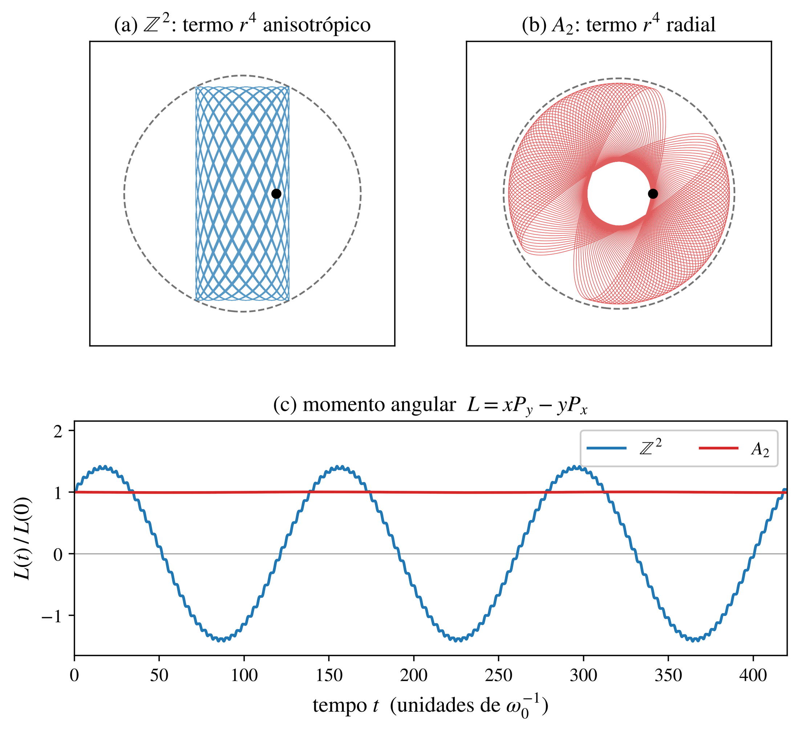

Dinâmica confinada e indicadores de caos
Este módulo descreve as ferramentas numéricas: como garantir que a partícula fica num poço, como integrar sem destruir a estrutura hamiltoniana e como distinguir, de forma confiável, órbitas regulares de caóticas.
Confinamento: a energia de sela \(E_{\rm sep}\)
Para que a partícula nunca deixe o poço da origem, a energia deve ficar abaixo do menor valor de \(V\) ao longo de qualquer caminho até outro mínimo — o valor de passo de montanha. Ele é atingido num ponto crítico que não é mínimo (teorema do passo de montanha, Ambrosetti e Rabinowitz, 1973). Definimos
\[ E_{\rm sep}=\min\{V(\mathbf x):\ \nabla V(\mathbf x)=0,\ \mathbf x\ \text{não é mínimo},\ V(\mathbf x)>0\}. \]Como encontramos os pontos críticos
- Meios-períodos são pontos críticos exatos. Se \(\mathbf p\) é um período, \(V(\mathbf p/2+\mathbf x)=V(-\mathbf p/2-\mathbf x)=V(\mathbf p/2-\mathbf x)\) (paridade e periodicidade), logo \(\nabla V(\mathbf p/2)=0\).
- Sementes também nos máximos de \(V\) ao longo dos segmentos \(s\,\mathbf p\), \(s\in[0,1]\), e em pontos aleatórios da célula; cada semente é refinada por Newton híbrido com o Hessiano exato.
- O tipo do ponto crítico (índice de Morse) vem dos autovalores do Hessiano; autovalores nulos indicam selas degeneradas (no FCC, por exemplo, há uma variedade contínua de selas em \(E=4\)).
- Cota de controle: \(\mathrm{UB}=\min_{\mathbf p}\max_s V(s\mathbf p)\) sobre os períodos curtos. Sempre \(E_{\rm sep}\le\mathrm{UB}\); se a busca encontrasse algo acima, uma sela teria sido perdida.
Os períodos do potencial formam o reticulado \(2\pi(\mathrm{span}_\Z S)^*\). Obtemos uma base inteira por forma normal de Hermite e a reduzimos por LLL (Lenstra, Lenstra e Lovász, 1982), o que torna a enumeração dos períodos curtos eficiente até \(N=8\).
Integração simplética e mapa tangente
Usamos Velocity-Verlet (Verlet, 1967), simplético de segunda ordem: o erro de energia não deriva e fica em \(|\Delta H/H|\sim10^{-5}\) com passo \(h=0{,}01\)–\(0{,}02\) (Hairer, Lubich e Wanner, 2006). Os vetores tangentes \(\delta\mathbf z=(\delta\mathbf r,\delta\mathbf p)\) evoluem pela derivada exata do mapa discreto:
\[ \delta\mathbf p\leftarrow\delta\mathbf p-\tfrac h2 H(\mathbf r_n)\,\delta\mathbf r,\quad \delta\mathbf r\leftarrow\delta\mathbf r+h\,\delta\mathbf p,\quad \delta\mathbf p\leftarrow\delta\mathbf p-\tfrac h2 H(\mathbf r_{n+1})\,\delta\mathbf r, \qquad H=\sum_{\mathbf k}\mathbf k\mathbf k^{\mathsf T}\cos(\mathbf k\cdot\mathbf r). \]Assim os expoentes calculados são exatamente os do mapa simplético, sem erro de consistência. Todas as órbitas de uma energia são integradas em lote (vetorização em NumPy). As condições iniciais ficam na seção \(r_N=0\), \(p_N>0\), dentro do poço da origem.
Expoentes de Lyapunov no regime exponencial
O espectro é obtido pelo método de Benettin e colaboradores (1980): \(k\) vetores tangentes são reortonormalizados por QR a cada \(\Delta t=1\), e o crescimento acumulado \(S_i(t)=\sum\ln R_{ii}\) dá \(\lambda_i=\lim S_i(t)/t\). A entropia de Kolmogorov–Sinai segue da fórmula de Pesin, \(h_{KS}=\sum_{\lambda_i>0}\lambda_i\).
Para a média sobre a órbita inteira também ajustamos \(\lambda(t)=\lambda_\infty+a/t+b\ln t/t\) nos últimos 60% do tempo. O piso de ruído é o \(\lambda\) medido no \(\Z^N\), que é separável e portanto integrável: qualquer valor nesse nível é indistinguível de zero no tempo integrado.
SALI e GALI
Dois vetores tangentes normalizados \(\hat w_1,\hat w_2\) evoluem juntos. O índice de alinhamento \(\mathrm{SALI}=\min(\|\hat w_1+\hat w_2\|,\|\hat w_1-\hat w_2\|)\) (Skokos, 2001) tende a zero como \(e^{-(\lambda_1-\lambda_2)t}\) em órbitas caóticas e flutua em torno de um valor positivo em órbitas regulares. \(\mathrm{GALI}_2=\|\hat w_1\wedge\hat w_2\|\) é a generalização (Skokos, Bountis e Antonopoulos, 2007). Classificamos como caótica a órbita com \(\mathrm{SALI}<10^{-8}\).
Análise de frequências
Para cada coordenada calculamos a frequência dominante de \(z_j=r_j-ip_j\) (FFT com janela de Hann e interpolação parabólica do pico) nas duas metades da órbita. A difusão de frequência \(\Delta\nu/\nu=\max_j|\nu_j^{(2)}-\nu_j^{(1)}|/\nu_j^{(1)}\) é pequena em toros invariantes e grande em órbitas caóticas (Laskar, Froeschlé e Celletti, 1992; Laskar, 1993). Com frequências degeneradas, o pico dominante pode oscilar entre picos próximos, e por isso usamos esse indicador junto com o SALI.
Momento angular: o teste direto da isotropia
Em \(N\) dimensões o momento angular é o tensor antissimétrico \(L_{ij}=r_ip_j-r_jp_i\). Seu invariante de rotação é
\[ |L|^2=\sum_{i